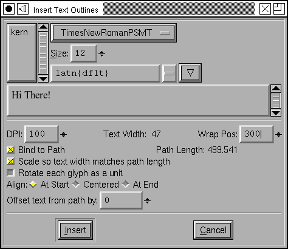
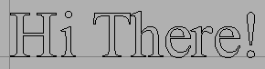

Insert Text Dialog¶
Generally when designing a font you will not want to use this dialog. What is the point of a glyph which is made up of precomposed text?
But occasionally it is useful. A company’s logo might want to live in a single glyph.
This dialog looks rather like the print dialog. You may enter text, display it in a given font, and at a desired pointsize. You may apply OpenType features.
Once you have composed your text, you may insert it into a glyph. The text will be insert as the outlines of the characters you entered. In the simplest case, the text will much as you entered them at the origin of the glyph.
The text will be scaled. If you entered the text with a pointsize of 12, then the outlines will be scaled so that the em-size is 12. If you use a font where the em-size is 1000, and the character “H” is 662, then after scaling the “H” will be 12*662/1000 = 7.9 units high.
(You can, of course, rescale the outlines once they are in the glyph).
If you enter a lot of text, it will wrap. The dialog shows the length of the longest line, and the location at which text will wrap.
Complications arise if you select a path in the glyph before invoking the Insert Text dialog – then you can bind the text you enter so that it curves with the path. You can have FontForge scale your text so that it exactly fits the path length, or you can position your text at the start, middle or end of the path. Text is bound so that if the path is a horizontal line running from left to right the text will use the path as a baseline and be oriented as you would expect for left to right text, if the path is a horizontal line running right to left, then the text will appear up-side-down. If you don’t want the text to use the path as its baseline (if you’d like a gap between the two) then enter a value in “Offset text from path”
Finally FontForge has two modes for binding text. Either it will use the place where the center of the glyph aligns on the path and rotate the entire glyph appropriately for that point, or it will distort each bit of the glyph as is appropriate for where that bit aligns on the path. In the first aproach the letters are cleaner individually but the text as a whole is more jagged.